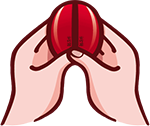

黃大仙線上靈籤 「黃大仙有求必應」是香港人的順口語，本站提供一站式黃大仙線上靈籤及解籤服務，誠心向大仙稟報求問之事，然後搖動籤筒求籤。一籤問一事，一事問一次。您求得了第「籤」： 您求得了第籤，您可擲聖杯來替您判定靈籤與否，或者立即解說此籤。 注意！若決定使用聖杯來判定，就必須擲到聖杯才算靈籤，若擲到笑杯就重新求過。向神明求籤乃神聖之事，別因抽中下下籤或預先看過簽文而賴皮哦，賴皮的話，無論那一位神都懶得理你！  掷圣杯 解 签